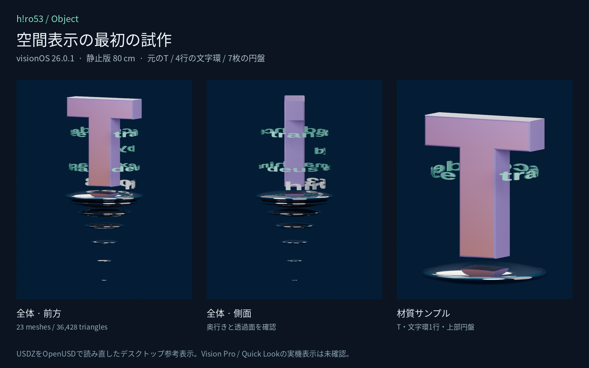

h!ro53 / OBJECT · SPATIAL TEST 01
空間に置いて、見回す
visionOS 26.0.1向けの静止モデルの試作です。まず全体を開き、Tの厚み・四行の文字環・円盤を正面と背面から確認してください。

立体モデルを読み込んでいます。
実寸を確認するには「空間で見る」を選ぶか、USDZを保存してVision Proの「ファイル」から開いてください。ページ内の表示は枠に合う大きさです。全体は高さ80 cm、材質サンプルは同じ縮尺で約46 cm。配置・回転・拡縮はOSの操作を使います。
文字の向き、透明な部分の抜け、裏面、円盤の明るさを確かめてください。照明と反射は元のWeb作品と異なります。画像はデスクトップでの参考描画で、Vision Pro実機での表示・材質・操作は未確認です。
このページは静止版2種だけのテストです。元の作品は引き続きObjectで鑑賞できます。